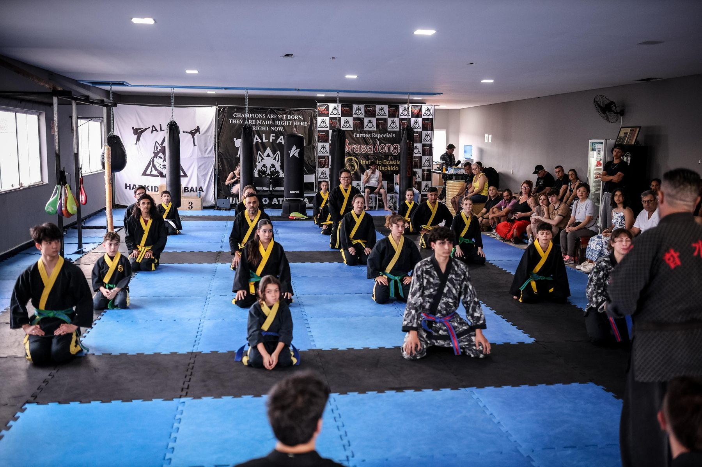

Uma associação sem fins lucrativos que forma não apenas atletas, mas pessoas — disciplina, sociabilidade e trabalho em equipe através da arte marcial coreana.

O Instituto Brasileiro de Hapkido (IBH) é uma associação civil sem fins lucrativos, de âmbito nacional, fundada pelo Chong Kwanjangnim Raul Braga Freire. Nasceu em 2007, quando o Mestre — já formado e atuante como professor desde o início dos anos 1990 em São Paulo — mudou-se para Piracaia-SP e fundou o Instituto.
Linhagem de transmissão direta: Raul foi formado por Kim Jong Man e Sérgio Fernandes, que por sua vez foram formados por Yun Sik Kim — mestre coreano radicado no Brasil desde 1977, fundador do Bum Moo Kwan na Coreia. Três gerações até o Brasil.
O Instituto é uma entidade sem fins lucrativos (CNPJ 17.318.177/0001-33), com sede em Piracaia-SP. Nossa missão é a difusão e o ensino do Hapkido e da cultura coreana no Brasil — formando não apenas atletas, mas cidadãos, através da disciplina, da sociabilidade e do trabalho em equipe.
Ao longo dessa trajetória, o IBH construiu uma das histórias mais expressivas do Hapkido brasileiro em competições internacionais: 2º lugar geral no Mundial de 2013, na Coreia do Sul, e 2º lugar geral no Mundial de 2016, na Tailândia, além de pódio na apresentação em grupo do Mundial do México em 2017 — 116 medalhas documentadas em três campeonatos mundiais. Em 2013, o Instituto também formou 50 árbitros internacionais de Hapkido. Hoje a rede reúne cerca de 200 atletas distribuídos por 5 escolas filiadas — mais de 70% deles crianças e jovens — e já formou mais de 50 faixas-pretas, seguindo presente em campeonatos e eventos regionais, como o Open Brasil de Hapkido (Salvador-BA, 2024) e o Campeonato IBH de Hapkido em Piracaia-SP.